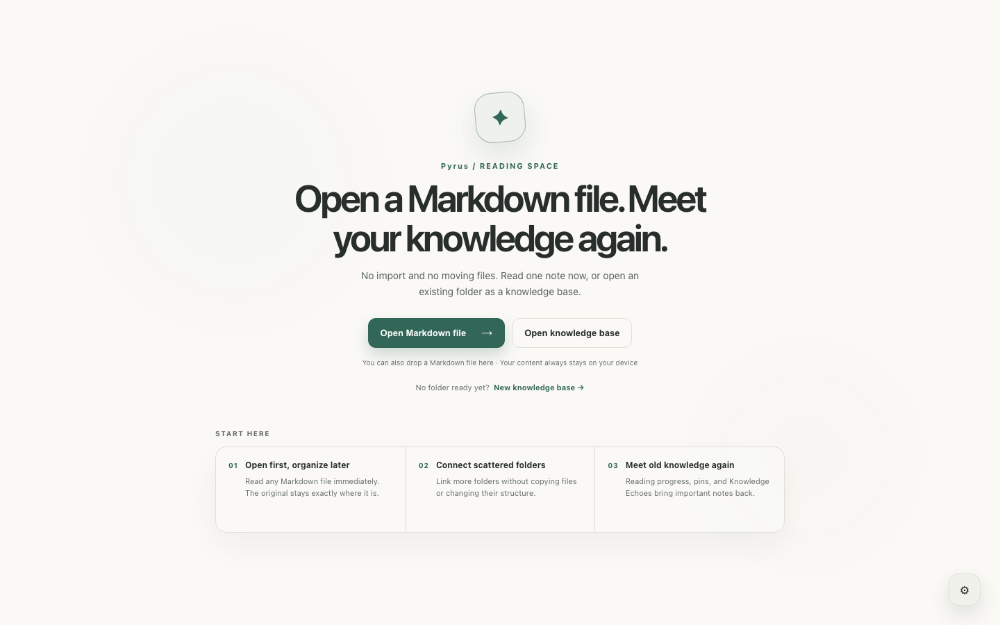

Right-click the .md file and choose Open with. Pick Notepad for a quick text check, or open it in VS Code and press Ctrl+Shift+V for a formatted preview. If you mainly want to read, use a local Markdown reader so the file opens as a document without leaving your computer.
- Quick checkNotepad
- Write or editVS Code preview
- No installationOnline viewer
- Comfortable readingLocal reader
What is a .md file?
A file ending in .md contains Markdown: plain text with lightweight symbols for structure. A line beginning with # is a heading, text between double asterisks is bold, and backticks mark code.
Because it is plain text, Windows can open it with almost any text editor. The difference is whether the app shows the symbols or renders them into a readable document.
Option 1: Open it in Notepad for a quick check
- Right-click the
.mdfile. - Select Open with, then choose Notepad.
This is the fastest way to inspect or change a few words. Depending on your Windows and Notepad version, you may have some formatting support, but plain-text symbols can still be visible and advanced elements such as Mermaid diagrams or math may not render.
Best for: checking the content or making a tiny edit. Not ideal for: reading a long document.
Option 2: Use the VS Code Markdown preview
- Open the file in Visual Studio Code.
- Press Ctrl+Shift+V to open the rendered preview.
- Use Ctrl+K V if you want the preview beside the source.
VS Code is excellent when you are writing Markdown, checking source, or working inside a software project. Its preview understands common Markdown and stays close to the editable file.
The trade-off is that you are still opening a development environment—with tabs, panels, commands, and editing controls—when you may only want to read.
Option 3: Use an online viewer carefully
Online viewers can render a file without installing anything. They are convenient on a borrowed computer, but first check whether the page processes the file locally in your browser or uploads it to a server.
For private notes, work documents, or unpublished writing, a local app is the safer default.
Option 4: Open it in a dedicated Markdown reader
A dedicated reader is useful when the file is something to understand rather than edit: documentation, an exported AI conversation, a long technical note, a README, or an archive of saved articles.
- Install Pyrus for Windows.
- Choose Open Markdown file on the welcome screen, or drag the file onto the window.
- Read the rendered document. The original stays in its existing folder and is not copied into a proprietary library.

Pyrus also remembers reading progress, provides a live outline for long documents, supports local images, and lets a useful standalone note be linked into a knowledge base later without moving the source file.
Make Pyrus—or another reader—the default .md app
- Right-click any
.mdfile and select Open with. - Choose Choose another app.
- Select your Markdown reader. If it is not listed, choose Look for another app on this PC.
- Enable Always use this app to open .md files, then confirm.
You can still right-click and choose VS Code or Notepad whenever you need to edit the source.
Which method should you use?
| Method | Best for | Rendered view | Stays local |
|---|---|---|---|
| Notepad | Quick inspection or tiny edits | Limited / version-dependent | Yes |
| VS Code | Writing, code projects, side-by-side preview | Yes | Yes |
| Online viewer | One-off use without installing | Yes | Depends on the service |
| Dedicated reader | Comfortable reading and returning later | Yes | Yes |
Frequently asked questions
What program opens .md files on Windows?
Notepad and code editors open the underlying text. To see a formatted document, use a Markdown-capable editor such as VS Code or a dedicated Markdown reader.
Can Microsoft Word open a Markdown file?
Word can open the text, but it is not a native Markdown reader and usually will not interpret every Markdown element as intended. Converting the file also risks changing the format.
Can I read Markdown without uploading it?
Yes. Notepad, VS Code, and local readers work directly with files on your computer. No account or cloud service is required.
Why are images missing from my Markdown file?
Markdown often points to images using relative paths. Keep the image folder in the same relative location as the note, and use a reader that resolves images relative to the original file.
Are .md files safe?
A Markdown file is plain text, but links and embedded HTML can still point elsewhere. Treat files from unknown sources with the same care as any downloaded document.
Want the file to feel like a document?
Pyrus is a free, open-source Markdown reader for Windows, macOS, and Linux. Open one file without setup, keep it where it is, and turn a folder into a reading space only when you need one.
Download Pyrus for Windows — free